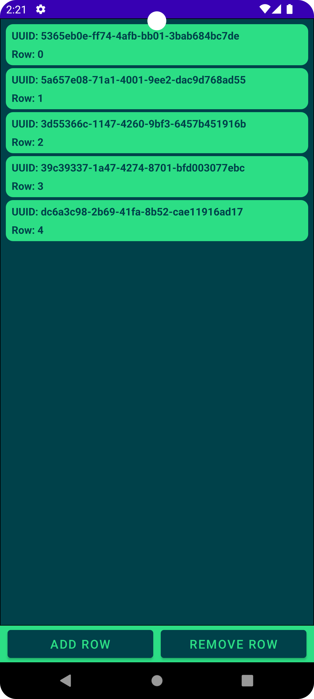

Exposing QtAbstractListModel to QML
Overview

This example consists of two separate projects: A QML project and a Kotlin-based Android project which will host and display the QML content. It shows how to use QtAbstractListModel to share data from the Android side to the QML view which displays the data using a ListView.
Running the example
To run this example, you need Android Studio and a Qt for Android installation.
The Qt Gradle Plugin will be used to build the QML project during the Android project build process. For this, the example has some plugin configuration in the app-level build.gradle.kts file which may need to be modified if the plugin cannot, for example, find the Qt kit directory.
QtBuild {
// Relative for Qt (Installer or MaintenanceTool) installations.
qtPath = file("../../../../../../../6.9.0")
projectPath = file("../../qtabstractlistmodel")
}
For further configuration of the plugin, please refer to the Qt Gradle Plugin documentation.
QML project
The QML project is quite simple, it defines a data model as a property of the root object and some UI elements to display the data from that model.
Rectangle { id: mainRectangle property AbstractItemModel dataModel
To display the data from the model, a ListView is created. The model property is then set to the data model declared earlier.
ListView {
id: listView
model: mainRectangle.dataModel
In order to display the data model, the ListView needs a delegate which will be instantiated for each item in the data model. In this case, the delegate will be a Rectangle that holds two Text elements in a Column, displaying the data from each element in the data model.
delegate: Rectangle {
required property var model
width: listView.width
height: textColumn.height + (2 * textColumn.spacing)
color: "#2CDE85"
radius: 25
Column {
id: textColumn
height: idText.height + rowText.height + spacing
spacing: 15
anchors {
verticalCenter: parent.verticalCenter
left: parent.left
right: parent.right
leftMargin: 20
rightMargin: 20
}
Text {
id: idText
color: "#00414A"
text: model.id
font.pixelSize: 36
font.bold: true
}
Text {
id: rowText
color: "#00414A"
text: model.row
font.pixelSize: 36
font.bold: true
}
}
}
Kotlin project
The Android side consists of a single Activity and the definition for the data model used earlier in the QML view.
Data model
The data model MyListModel is a child class of QtAbstractListModel, with ArrayList<String> as the internal storage system for data. In the initializer block of MyListModel, it generates some random data for the list.
class MyListModel : QtAbstractListModel() {
private val m_dataList = ArrayList<String>()
init {
synchronized(this) {
for (row in 0..4) {
m_dataList.add(UUID.randomUUID().toString())
}
}
}
Each item in the model has a set of data elements associated with it, each with its own role. Custom implementations of QtAbstractItemModel must define a custom role for each data element. Each role has an associated Int value, which is used when retrieving the data, and a String value, which specifies the name of the data element when used from QML.
@Synchronized
override fun roleNames(): HashMap<Int, String> {
val m_roles = HashMap<Int, String>()
m_roles[DataRole.UUID.value()] = "id"
m_roles[DataRole.Row.value()] = "row"
return m_roles
}
While the Int values in the "roleNames()" method may be hard-coded, this example specifies a custom enum class DataRole within MyListModel, which is used when referring to these values. In this example, we define two roles: UUID and Row.
private enum class DataRole(val m_value: Int) {
UUID(0),
Row(1);
fun value(): Int {
return m_value
}
companion object {
fun valueOf(value: Int): DataRole? {
val values = entries.toTypedArray()
if (0 <= value && value < values.size) return values[value]
return null
}
}
}
When it comes to returning data from the data model, the class must override the "QtAbstractListModel::data()" method. This method takes two parameters: QtModelIndex and Int, which refer to the index and role of the data element, respectively.
In "MyDataModel::data()", the UUID role returns the data from the given index in the internal data, while the Row role returns the row of the requested element.
Note: This method, along with some others, is annotated with a @Synchronized tag. This is due to calls to these methods originating from the Qt thread and accessing the underlying data possibly at the same time as requests from the Android thread via the "addRow()" and "removeRow()" methods.
@Synchronized
override fun data(qtModelIndex: QtModelIndex, role: Int): Any {
return when (DataRole.valueOf(role)) {
DataRole.UUID -> "UUID: " + m_dataList[qtModelIndex.row()]
DataRole.Row -> "Row: " + qtModelIndex.row()
else -> ""
}
}
To allow outside actors to manipulate the QtAbstractItemModel, the example adds two additional methods to MyDataModel. To add data to the row, it has the "addRow()" method; to remove data, there is the "removeRow()" method. These are used from the main activity.
@Synchronized
fun addRow() {
beginInsertRows(QtModelIndex(), m_dataList.size, m_dataList.size)
m_dataList.add(UUID.randomUUID().toString())
endInsertRows()
}
@Synchronized
fun removeRow() {
if (!m_dataList.isEmpty()) {
beginRemoveRows(QtModelIndex(), m_dataList.size - 1, m_dataList.size - 1)
m_dataList.removeAt(m_dataList.size - 1)
endRemoveRows()
}
}
Main activity
The MainActivity class is a simple Kotlin-based Activity but also implements the interface QtQmlStatusChangeListener to listen to QML loading status events. It also stores the QtQuickViewContent object for the main view of the QML application and an instance of the data model detailed above.
class MainActivity : AppCompatActivity(), QtQmlStatusChangeListener {
private val m_mainQmlContent: Main = Main()
private val m_listModel = MyListModel()
When creating the main Activity of the application, the example first creates a QtQuickView and places it into the view hierarchy.
val qtQuickView: QtQuickView = QtQuickView(this)
val params: ViewGroup.LayoutParams = FrameLayout.LayoutParams(
ViewGroup.LayoutParams.MATCH_PARENT, ViewGroup.LayoutParams.MATCH_PARENT
)
val qmlFrameLayout: FrameLayout = findViewById<FrameLayout>(R.id.qmlFrame)
qmlFrameLayout.addView(qtQuickView, params)
After adding the QtQuickView into the UI, the example finds the buttons that are used to manipulate the data model and sets some click listeners to call addRow() and removeRow() on the member data model.
val addRowAtEndButton: Button = findViewById<Button>(R.id.addRow)
val removeRowFromEndButton: Button = findViewById<Button>(R.id.removeRow)
addRowAtEndButton.setOnClickListener { _: View? ->
m_listModel.addRow()
}
removeRowFromEndButton.setOnClickListener { _: View? ->
m_listModel.removeRow()
}
Once the UI setup and listeners are done, the QML component can be prepared and loaded. The example sets the MainActivity as a listener for the status change signal of the QML component and tells QtQuickView to load the QML component.
m_mainQmlContent.setStatusChangeListener(this)
qtQuickView.loadContent(m_mainQmlContent)
Finally, once the QML component is successfully loaded, the example assigns the value of the MyDataModel instance into the dataModel property in the QML component.
override fun onStatusChanged(qtQmlStatus: QtQmlStatus) {
if (qtQmlStatus === QtQmlStatus.READY) {
m_mainQmlContent.setDataModel(m_listModel)
}
}